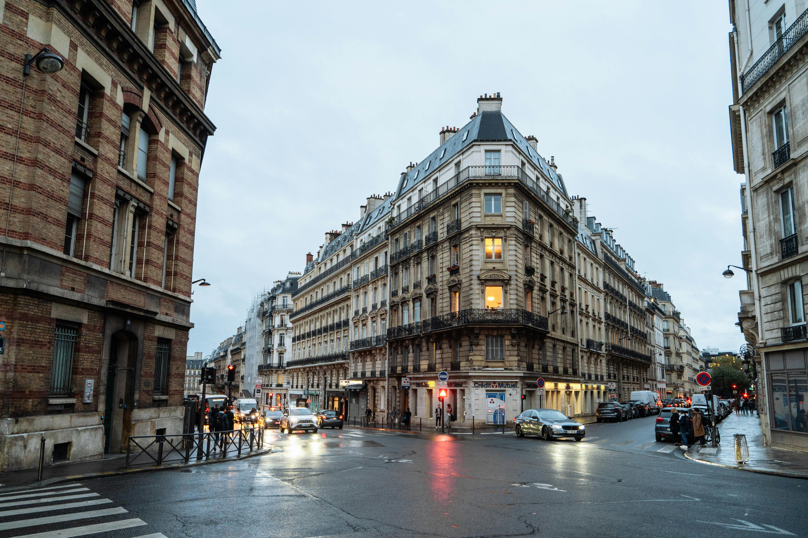
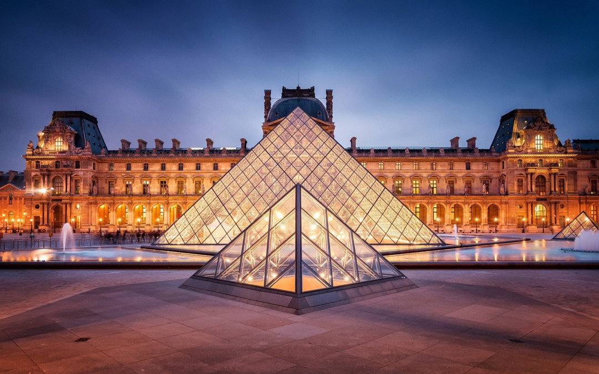
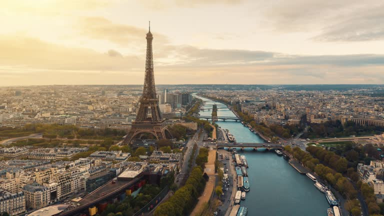
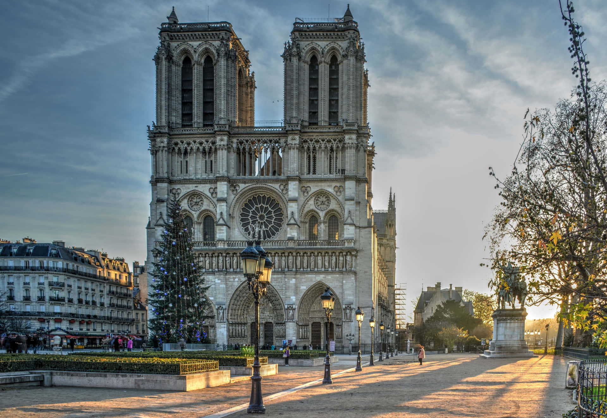

Fashion (La Mode )
As one of the world's fashion capitals, Paris is home to legendary haute couture houses and chic boutiques. Style is a way of life here.
The City of Light, where romance, art, and history meet on every corner.
Paris's history stretches back to the 3rd century BC when it was a Roman town called Lutetia. It became the capital of France in 987 and has since been the epicenter of major political and cultural events, including the French Revolution and the Belle Époque. The city's architecture is a testament to its layered past, from medieval cathedrals to grand Haussmannian boulevards, each telling a story of its evolution into the global metropolis it is today.

As one of the world's fashion capitals, Paris is home to legendary haute couture houses and chic boutiques. Style is a way of life here.
From flaky croissants at a local boulangerie to exquisite Michelin-starred dinners, Parisian food is an art form meant to be savored.
With world-class museums and countless galleries, Paris has been a magnet for artists for centuries, shaping the course of art history.

The world's largest art museum and a historic monument, home to masterpieces like the Mona Lisa and the Venus de Milo.

Originally built for the 1889 World's Fair, this iron lattice tower has become the definitive symbol of both Paris and France.

A masterpiece of French Gothic architecture, this medieval Catholic cathedral is renowned for its stunning stained glass and gargoyles.